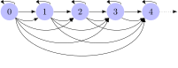

Partially ordered sets (posets)
- tuples (basics)
- relations (order relation intuitions)
While sets are unstructured, they can be combined with an ordering relation to yield a structured object. Usually, this will be a partial order. A set with a partial order defined over it is a partially ordered set or simply poset.
Definition
In mathematical terms, a poset is usually treated as a tuple \(\left \langle S, R \right \rangle\) that consists of the set \(S\) and the order \(R\) defined over its elements. Don’t attach too much significance to this, it is just a matter of notation and you wouldn’t want to apply the usual tuple operations to these objects. For instance, we wouldn’t want to concatenate the posets \(\left \langle S_1, R_1 \right \rangle\) and \(\left \langle S_2, R_2 \right \rangle\) to get a 4-tuple \(\left \langle S_1, R_1, S_2, R_2 \right \rangle\), that doesn’t make much sense.
A partially ordered set, or simple poset, is a pair \(\left \langle S, R \right \rangle\) such that \(S\) is some set and \(R\) is a partial order over \(S\).
Sometimes, \(S\) is also called the carrier of the poset \(\left \langle S, R \right \rangle\).
The set of natural numbers is \(\mathbb{N} \mathrel{\mathop:}=\left \{ 0, 1, 2, 3, \ldots \right \}\). By itself, it has no internal order. But of course we can order the natural numbers according to the familiar relation \(\leq\), and then we get the poset \(\left \langle \mathbb{N}, \leq \right \rangle\). The carrier of \(\left \langle \mathbb{N}, \leq \right \rangle\) is \(\mathbb{N}\).
We can take the set \(H\) of all humans that ever lived or are currently alive. We then order this set by the ancestor relation. Since that is a partial order, the result is a poset.
Visualizing posets
Often it is very useful to visualize posets. In this case, elements of the set are represented as nodes in a figure, and arrows between the nodes indicate that they are related via the order relation. Here is what this looks like for the natural numbers ordered by \(\leq\).

This figure has multiple elements:
- A node for each natural number \(n\).
- An arrow connecting each \(n\) to \(n+1\).
- An arrow connecting each \(n\) to itself (because \(\leq\) is reflexive).
- An arrow connecting each \(n\) to \(n+2\), \(n+3\), and so on (because \(\leq\) is transitive).
The result is pretty convoluted because of the abundance of arrows. It is customary to omit arrows that can be inferred from the properties of the order. First one omits all arrows that can be inferred from transitivity. That is to say, if there is an arrow from \(x\) to \(y\) and another arrow from \(y\) to \(z\), we do not need an arrow from \(x\) to \(z\).
And if we know that the ordering relation \(R\) is reflexive, then we do not need all the loops either.
Caution: due to these conventions, a depiction of \(\left \langle \mathbb{N}, \leq \right \rangle\) will look the same as one for \(\left \langle \mathbb{N}, < \right \rangle\), but those are different posets.
Take the set \(\mathbb{Z} \mathrel{\mathop:}=\left \{ 0, -1, 1, -2, 2, -3, 3, \ldots \right \}\) of integers. Let \(x \prec y\) iff \(x^2 \leq y^2\). Sketch or describe in words a figure of the poset \(\left \langle \mathbb{Z}, \prec \right \rangle\). Avoid all arrows that can be inferred from the general properties of \(\prec\).
Let \(S\) be the set of all substrings of the word poset. Draw or describe in words the poset \(\left \langle S, \sqsubset \right \rangle\), where \(\sqsubset\) is the proper substring relation: \(x \sqsubset y\) iff \(x \neq y\) and there are (possibly empty) strings \(u\) and \(v\) such that \(u \cdot x \cdot v = y\).
Now suppose that we used \(\sqsubseteq\) instead: \(x \sqsubseteq y\) iff \(x \sqsubset y\) or \(x = y\). Do you have to change anything about your figure or description?